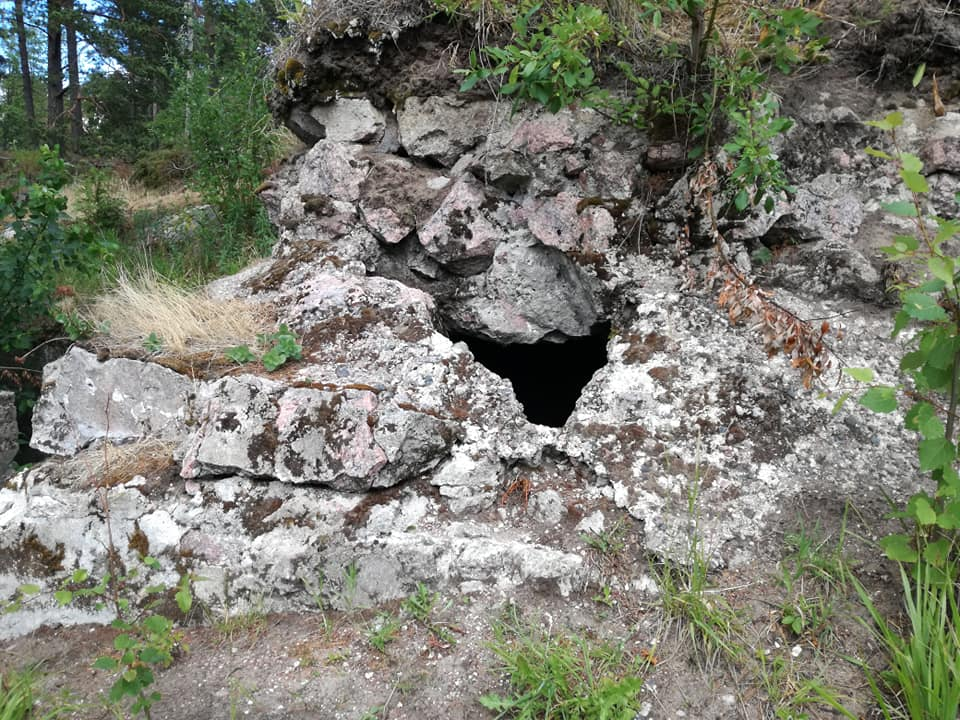
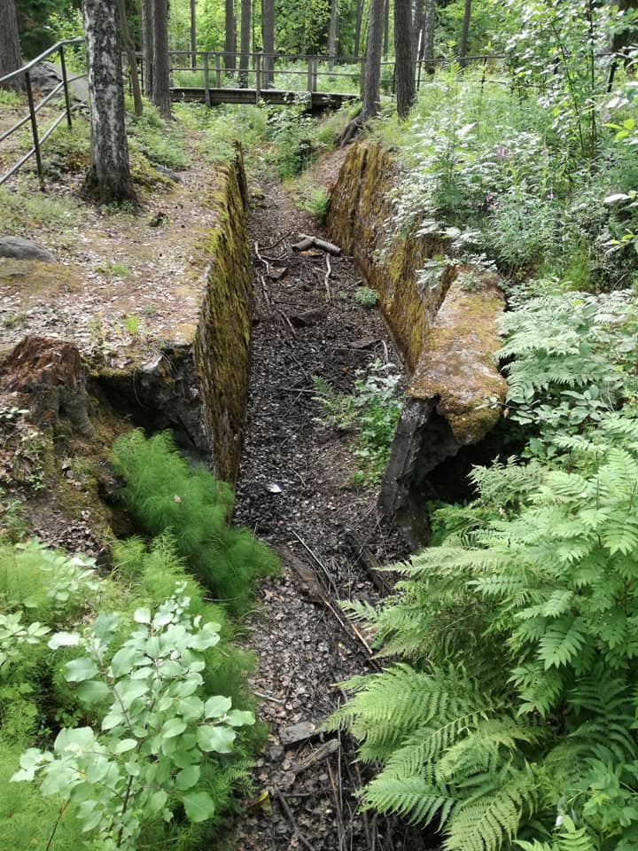
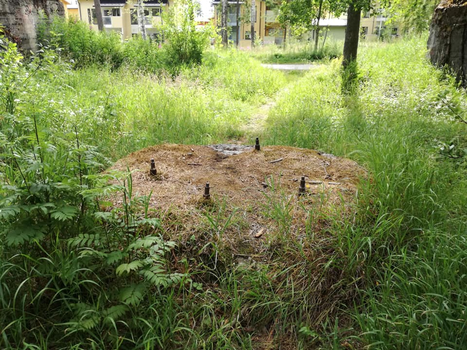
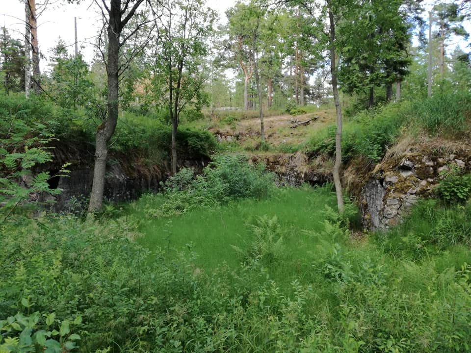
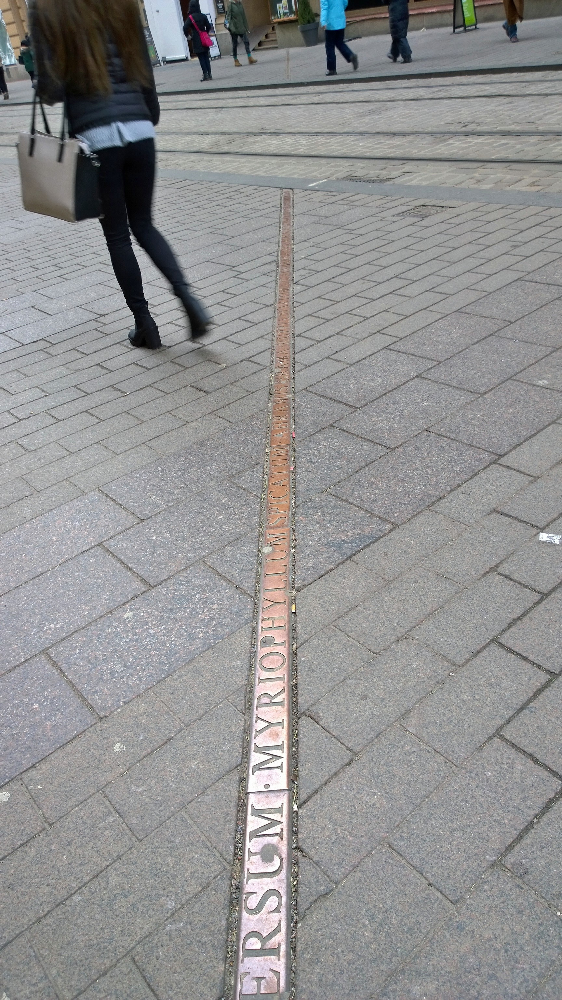
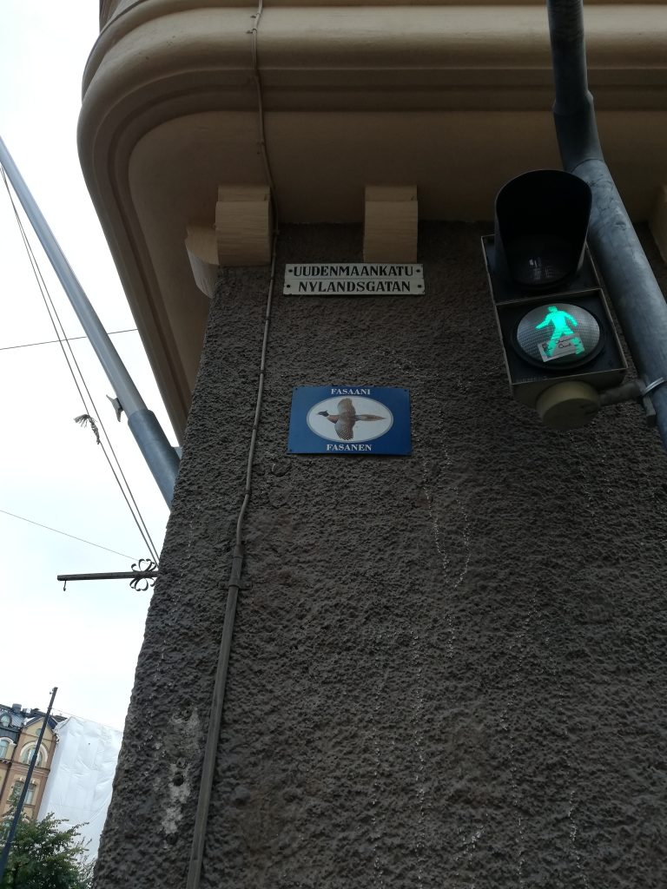

Archiving City Project - Part 2
Part 2 of the Archiving the City Project, which is about Landscape forgotten, but embedded in the cityscape through monuments.
Landscape Forgotten
Often landscape is a product of certain historical forces and authority, but they become invisible, just like other historical memory embedded in physical objects. Especially in city space, the landscape changes rapidly and drastically, often traces of the past becomes invisible. Here I present several “forgotten” traces of the past that shapes Helsinki’s landscape.
-

Bunker at the each end of the emplacement
-

Connecting trenches
-

Foundation for the artillery piece
-

Overgrown remnants of the artillery emplacement, dug out of the bedrock
Myllypuro, 15km East of Helsinki, at the end of the Metro line, is a residential suburb in the forest, where I live currently. The area took its suburban shape in 1970s and is filled with flats with 70s modernist style between the trees. What most forget is the fact that this area was a vital part of defense of Gulf of Finland for Russians, especially after Russo-Japanese War that left St. Petersburg vulnerable. Along the current Keha I ring highway has remnants of land fortress, Krepost Sveaborg, aimed to defend Suomelinna and other Russian Navy bases in Helsinki.
It stretches from the eastern end of Helsinki to Western neighbor city of Espoo, encircling the heart of the city, equipped with trench systems and artillery positions. Though artillery positions and communication trenches are visible, there are no memorial plates on-site, and not much preservation is done to these structures.
The current Myllypuro area has triple layer of landscape, a home to immigrant families, in 70s modernist flats which is built on top of 19th century Russian military project, though only upper two layers can be seen in plain eyes.

Kluuvinlahden fossiili (Wikimedia Commons)
https://fi.wikipedia.org/wiki/Tiedosto:Tuula_Narhinen_Kluuvinlahden_fossiilit_2003_4.jpg
{kind=link}
[Kluuvinlahden fossiilit]
One of the major street in central Helsinki, Aleksanterinkatu, has a metal line placed across the street which almost all of the tourists, and local walks past without noticing them. This metal line is a memorial of the Kluuvinlahti gulf that once extended from northeastern Töölönlahti through current Railway station to Esplanadi, one block south of Aleksanterinkatu. The bay was filled in 19th century city planning and created space for Railway Station and more land in the heart of the city. The border marked with this artwork by Tuula Närhinen reminds us of the lost landscape of central Helsinki.

Plaque at Uudenmaankatu in Punavuori district, showing pheasant as the animal
When one walks around in central Helsinki, one can notice a plate with animals right next to street name signs, after the confusion from two names to one street. This tells us about the legacies of Swedish city planning in 19th century. The plan by Ehrenström in 1812 included introduction of “kortteli” (quarters) system to Helsinki city, following the same system in Stockholm.
Basically, all of the southern part of Helsinki were given quarter names with a theme in one neighborhood, like animals, fish, plants, birds. The nomencleture did not extend north of Töölö and Pitkäsilta. In Kruununhaka neighborhood, where most of our City Centre campus buildings are located, has animal themed quarters as seen above. Though the use declined around the turn of century, some signs came back in 2000s in commemoration to the old tradition. This is a case of forgotten Swedish landscape coming back to life as a “cool” thing.
Traces of landscape within cityscape
The landscape tells us something about how nature is conquered/altered/modified by the people in power, and constitutes significant amount of what we see. Yet most do not realize the past landscapes, as cities continue to change and makes the past virtually invisible. But as seen in the Kluuvinlahden fossiilit and Animal plates, artistic remembrance projects for these forgotten landscape can sometime bring back the past in visible realm.